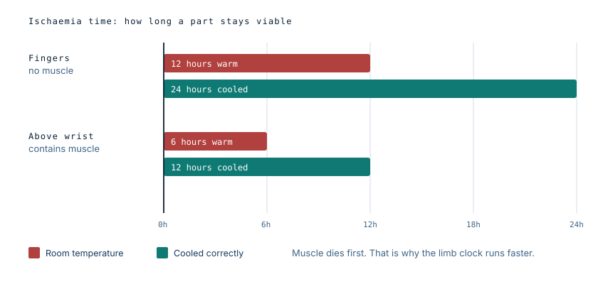
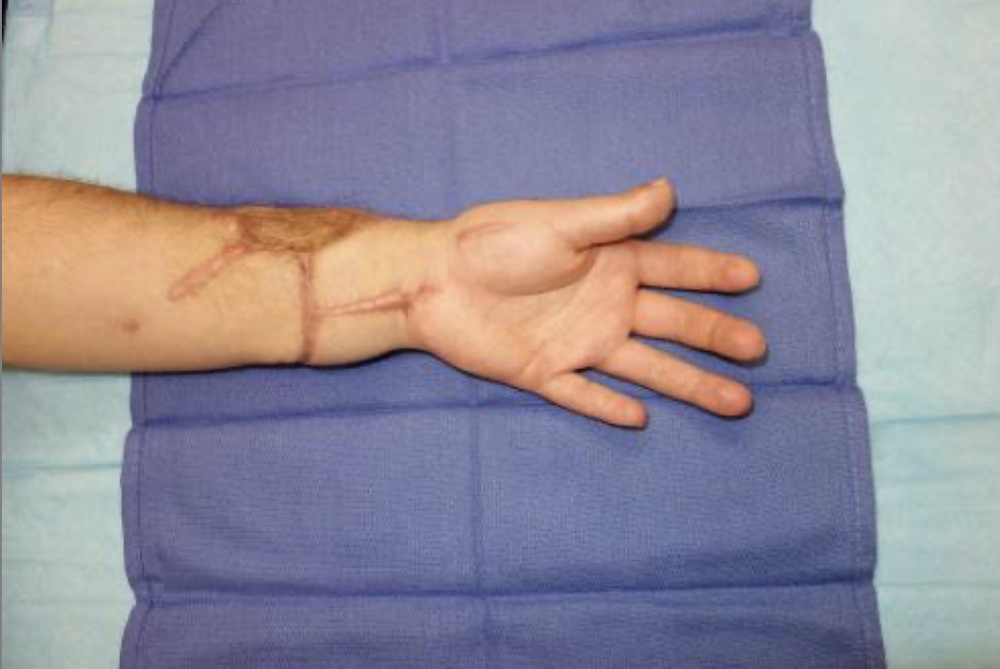

Replanting an arm: the clock, and the harder question
He reached a trauma centre 45 minutes after losing his left forearm. The surgical decision was straightforward and had to be made in minutes. The question underneath it was not straightforward at all: should a limb be reattached when the patient is the one who removed it?
The clock
Replantation is governed by ischaemia time — how long tissue survives without a blood supply. The limit is not the same for every body part, and the reason is muscle.
Fingers contain tendons, bone, nerves and skin, but essentially no muscle bellies. They tolerate around 12 hours at room temperature, and up to about 24 hours if cooled properly. Anything amputated above the wrist contains muscle, and muscle is the least tolerant tissue in the body to lack of oxygen. A forearm amputation gives roughly six hours warm, or about twelve hours cooled.

Cooling roughly doubles the available time, and how it is done matters. The amputated part is wrapped in moist gauze, sealed in a bag, and the bag placed on ice. It is not put directly against ice, which causes freezing injury, and it is not submerged in water, which macerates the tissue. Getting this wrong can cost a limb that was otherwise salvageable.
He arrived within 45 minutes, well inside the window.
Why a forearm is replanted when a finger might not be
It is counterintuitive, but the more proximal and more serious the amputation, the stronger the case for reattaching it. A single finger, particularly an index finger, is often better left alone: replantation means months of stiffness and therapy for a digit the hand can work around. A hand or forearm is different. There is no working around its absence, and no prosthesis restores what a native limb does. Wrist-level and above are therefore standard indications for replantation, and the decision has to be made fast because the clock is already running.
The harder question
The complication in this case was not anatomical. Replantation is a long operation followed by months of hand therapy and, frequently, further surgery. It is a substantial commitment of the patient's own effort and of hospital resources. When the injury is self-inflicted and the underlying illness is untreated, a reasonable person might ask whether that commitment is justified — whether the patient will engage with rehabilitation at all, or whether the limb is at risk again.
The published literature on these injuries is small but consistent. Across the reported cases, the overwhelming majority of patients had a diagnosable psychiatric illness, most commonly depression, bipolar disorder or schizophrenia, and around two thirds had psychotic features at the time. These are not decisions made from a settled mind. They are the product of conditions that respond to treatment.
That reframes the question entirely. The mental state that produced the injury is treatable. The limb, once discarded, is not recoverable later. Declining to replant on the grounds of the patient's state at presentation permanently forecloses an option, on the basis of something expected to change.
What was done
He underwent emergent replantation and was monitored on the microsurgery unit. Psychiatry was involved from the start rather than afterwards: he was started on medication for his depression, kept under continuous observation, and transferred to inpatient psychiatric care once he was medically cleared.
The surgical and psychiatric arms of the treatment ran together. That is the model the case supports, and it is worth stating plainly, because the failure mode in these presentations is to treat the limb thoroughly and the illness as an afterthought.
Recovery
He complied well with hand therapy, but after six months the tendons had become bound down in scar and he required tenolysis — a further operation to free the flexor and extensor tendons so they could glide again. This is a common and expected step after replantation, not a sign of failure.

At six years, his DASH score was 5.8. That scale runs from 0 to 100, where 0 is no disability, so 5.8 represents near-normal function of the arm. His recovery was graded Chen Grade 1, the highest category. He was described as extremely satisfied with both the appearance and the function of the limb, and he had returned to his previous employment.
What this case teaches
Two clocks were running. One was the ischaemia window, measured in hours, which decided whether replantation was possible at all. The other was the course of an untreated illness, measured in months and years, which was the thing that actually needed fixing. The case is often read as a surgical success, and it is one. But the six-year outcome — full function, satisfaction, back at work — depended just as much on the psychiatric care starting on day one as on the microsurgery.
If this is close to home
This article describes a medical case, and self-harm is a difficult subject to read about. If you are struggling, please talk to someone — a doctor, a crisis line in your country, or somebody you trust. Untreated depression is a treatable illness, and the outcome in this case turned on that fact.